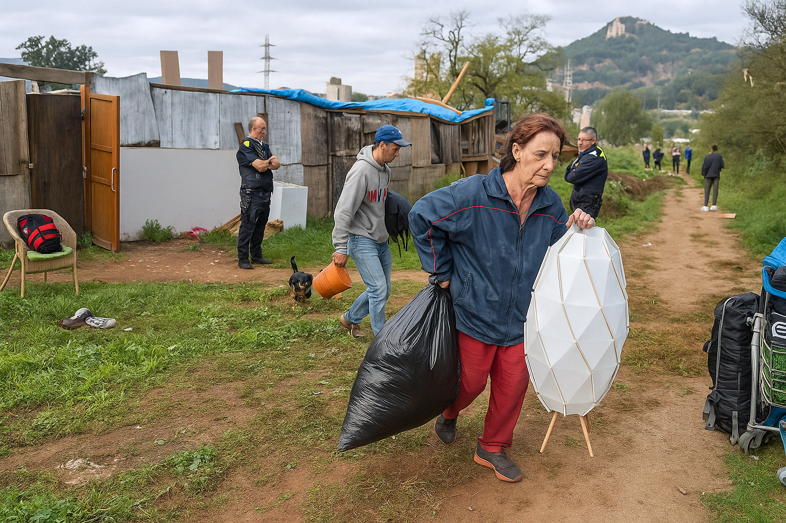
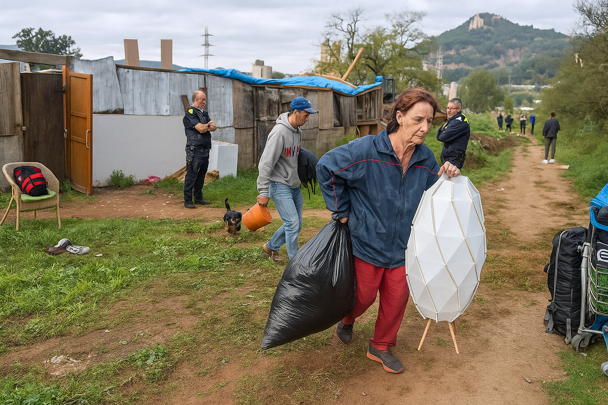

SomAqui.cat
Conectamos personas que necesitan ayuda con quienes pueden ofrecerla, de forma local y segura.
¿Necesitas ayuda o quieres ayudar?
SomAqui.cat es una plataforma solidaria para responder a emergencias locales como cortes de servicios, necesidades básicas o catástrofes.
Necesito ayuda Quiero ser voluntarioTeoría del Cambio
Nuestro objetivo es amplificar 20 millones de voces ciudadanas antes de 2026.
¿Cómo lo lograremos? A través de esta hipótesis en tres partes:
Proporcionamos herramientas digitales y experiencia a organizaciones alineadas con nuestra misión.

Aliados utilizan nuestra plataforma para recopilar datos y elevar las voces ciudadanas.
A medida que las voces se amplifican, se fortalece la efectividad de las organizaciones y el cambio social.
Para ciudadanos
¿Necesitas reportar un problema en tu zona? Descubre todo sobre SomAqui, cómo funciona y qué sucede con tu reporte una vez realizado.
Saber masEtiquetas temáticas
Usamos categorías como alimentación, salud o clima para clasificar las necesidades.
Red comunitaria
Otras personas, asociaciones o servicios pueden ver tu solicitud y ayudarte.
Únete a la red
Tu barrio te necesita. Puedes sumarte como voluntario o entidad colaboradora y marcar la diferencia.
Registrarme Iniciar Sesión